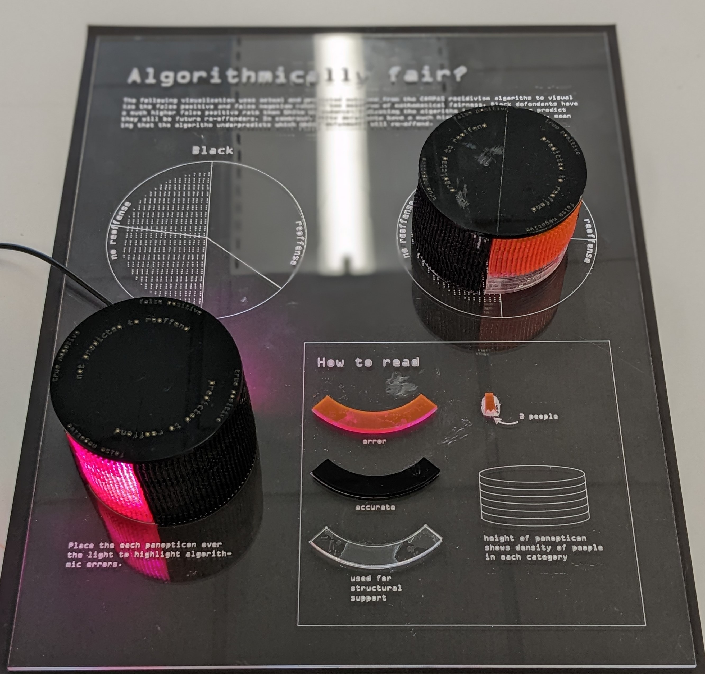
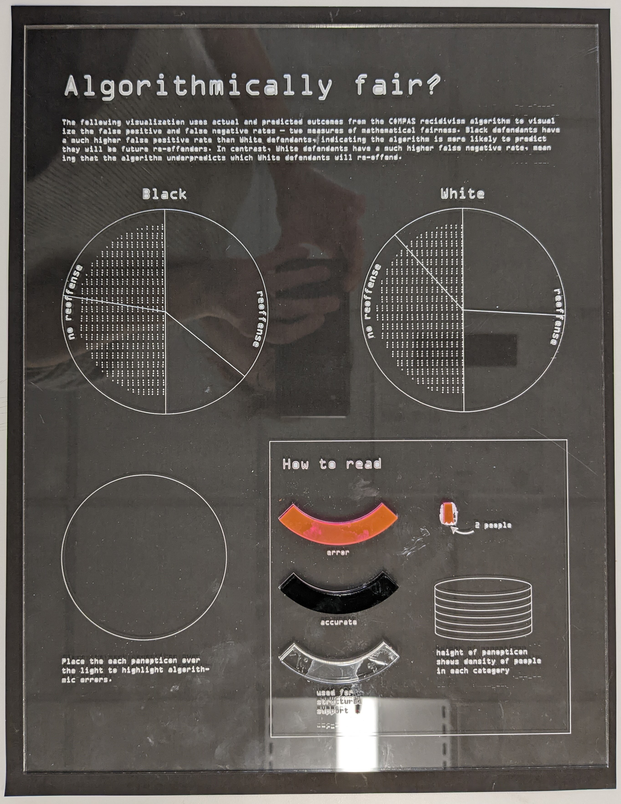
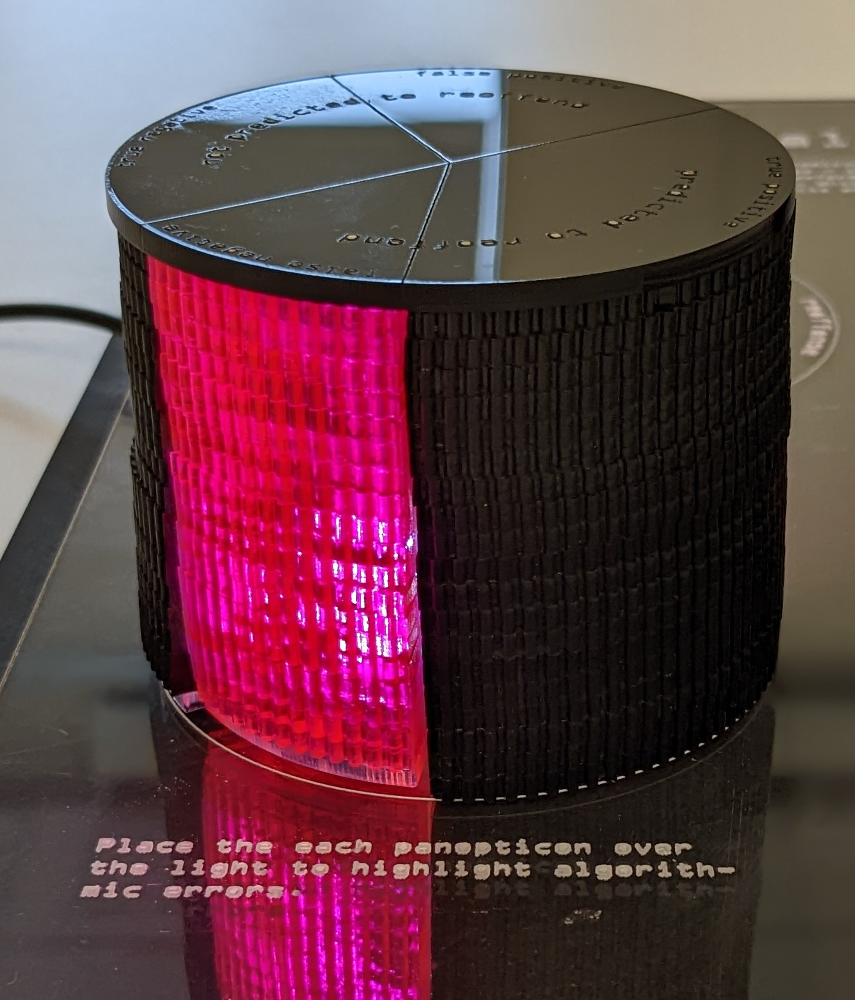

Project
This work critiques the use of risk assessment tools in the criminal justice system by asking an audience to reflect on the impacts of the COMPAS recidivism algorithm by engaging with three-dimensional panopticon forms representing disparate impacts. Algorithmically fair was inspired by two models of surveillance - the capture model and the surveillance model.
The surveillance model is often invoked using the visual metaphor of the panopticon, designed by Jeremy Bentham. Bentham arranged the prison cells around a centralized guard tower in his architectural plans. An intermittent light reminds prisoners that they are being watched, even if no one is there. Bentham's radial architectural design inspired the radial coordinate system in this design.
Philip Agre's theoretical model of data capture systems motivated the informational content of this work. Agre theorizes that capturing and storing human activity in information systems encourages individuals to change their behavior and reorient toward the system. Given specific data inputs, the COMPAS recidivism algorithm takes data inputs of an individual defendant. It returns a risk score from 1-10, representing the defendant's likelihood of returning to the system. Although predictive algorithms such as COMPAS are known to have low overall predictive accuracy, these risk scores are used to inform decision-making, orienting judges and other decision-makers towards the system.
Algorithmically fair comments on the capture model by visualizing two standard measures of algorithmic fairness — the false positive rate and the false negative rate — using the actual and predictive outcomes from the model. The false positive rate is the probability of falsely rejecting the truth, simply triggering a false alarm. In contrast, the false negative rate is the failure to raise a valid alarm. However, in a criminal justice context, triggering a false alarm can result in additional sentencing time or setting a higher bail. Additionally, failing to raise a valid alarm results in future offenders going free. Although developers of COMPAS and proponents of criminal risk assessment tools have used other definitions of algorithmic accuracy to claim that the COMPAS recidivism algorithm is fair, this artifact challenges this notion.
The physical panopticon models obstruct the fairness visualizations; the audience must physically engage with the artifact components to reveal the rates. While the rates indicate the disparate impacts of the algorithm on Black and White defendants; however, rates do not inform readers about the number of people affected. I designed the panopticon models' height to indicate the number of affected people so that a reader can compare the multiple metrics simultaneously.
Culturally, red is often associated with words such as stop, warning, harm, and error. The incorrect predictions, in red, were also printed on translucent acrylic compared to the correct predictions, which were printed on black opaque acrylic.
Light is used in the piece metaphorically and aesthetically. Light plays an interesting role in this piece metaphorically. In Bentham's panopticon, the lighted guard tower encouraged self-policing behaviors. However, in Algorithmically fair, light draws the viewer's eye and highlights the frequency of algorithmic error. Additionally, the predominantly black form representing algorithmic inequity makes visual reference to a black box algorithm. Lighting this form from the inside out to elucidate viewers on algorithmic bias symbolically reverses the role of light plays in these panopticon forms.
 